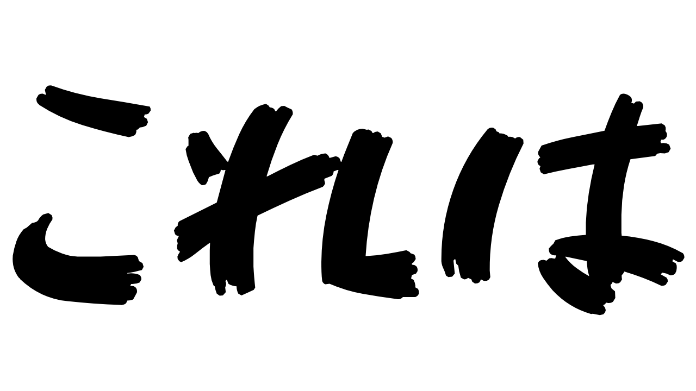
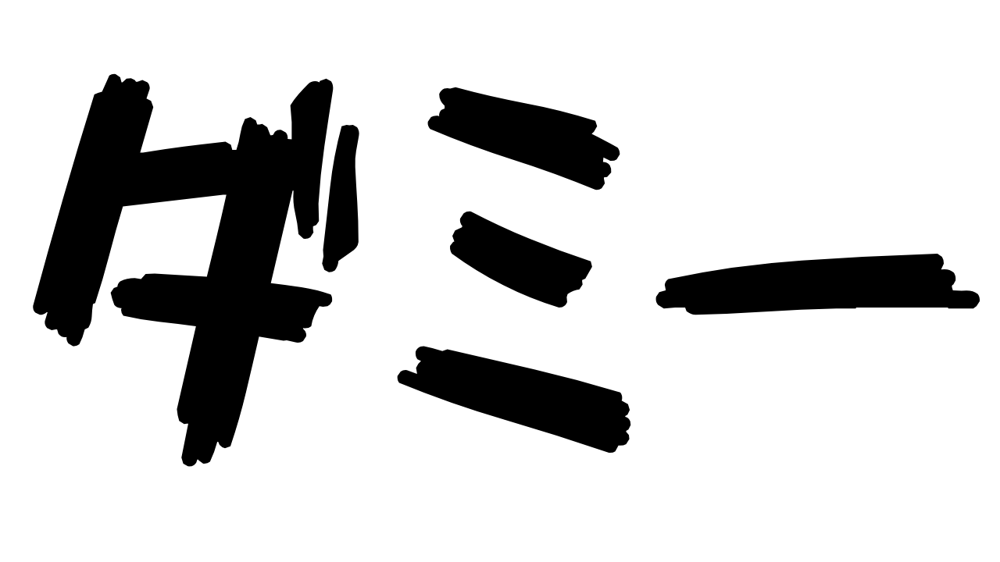
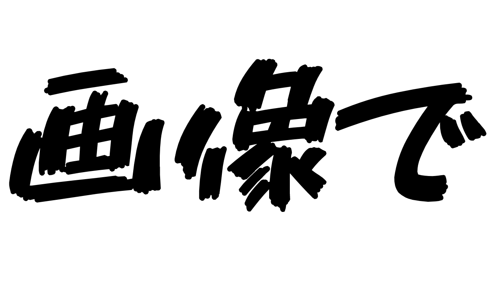
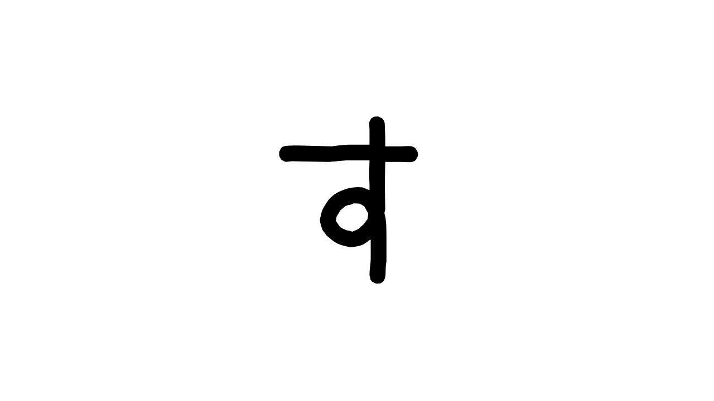

WEBエンジニア就職、長期インターン、IT企業、HTML、CSS、アルバイト
HOME
WEB ENGINEER
- 
- 
- 
- 
WEBエンジニアの内面
ABOUT
経歴
横浜国立大学 理工学部 ２年 (2022/09時点)大学で「C言語」を使っていたが、本格的にプログラムの勉強を始めたのは大学２年の夏休みから。
性格
ポジティブ
どんな事でも楽しみながらできる(気がする)。それもあってか、勉強は好きではないけど案外楽しいという矛盾が発生する。
マイペース
他人から時々言われる程度で、おそらく何事に対しても苦に感じなさそうに見えるからではないかと、、趣味
サッカー観戦(海外)
時間が空いた時にずっと観ているというほどではないですが、サブスクリプションに登録するぐらいにはハマってます。推しチームはアーセナルとレアル・マドリードです！！
YouTube観賞
小休憩を取りたいなと感じた時にちょこちょこ観ています。出身が同じ(愛知)ということもあってか、東海オンエアがここ数年ずっと好きで、最近はばんばんざいにも大ハマりしています！！
WEBエンジニアのスキル、技量
SKILLS
- 得意
- フロントエンド
- サーバーサイド
HTML・CSS
Level：4
JavaScript
Level：3
jQuery
Level：3
HTML・CSS
Level：4
JavaScript
Level：3
jQuery
Level：3
React.js
Level：1
Vue.js
Level：1
Ruby
Level：2
Ruby on Rails
Level：2
PHP
Level：2
Python
Level：2
Node.js
Level：1
C
Level：2
Java
Level：1
Git
Level：2
SQL
Level：2
基準
- Level１: 文法を多少知っている
- Level２: 使い方を思い出せば使える
- Level３: 自力で作品を生み出せる
- Level４: 先を見越しながらの作業可能
- Level５: 心配ご無用
WEBエンジニアとしての実績、キャリア
WORKS
ポートフォリオ
Ver.1
使用言語
HTML、CSS
作成時期
22/9月始め頃
簡単な紹介
HTMLとCSSだけで作っているモノなので動きはほぼないですが、色調やレイアウトなどに気を配りながら作りました。
Ver.2
使用言語
HTML、CSS、JavaScript
作成時期
22/9月終わり頃
簡単な紹介
動的なUIとして、ハンバーガーメニューやカルーセル、タブメニュー、テーマカラーの変更などの要素を導入しました。